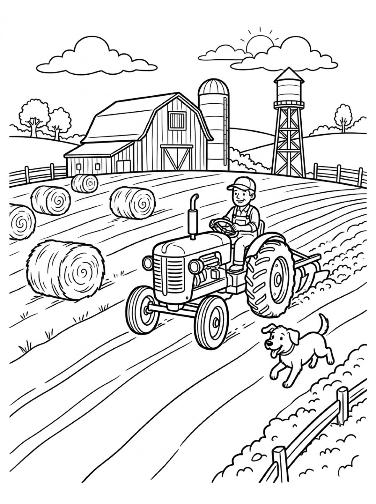
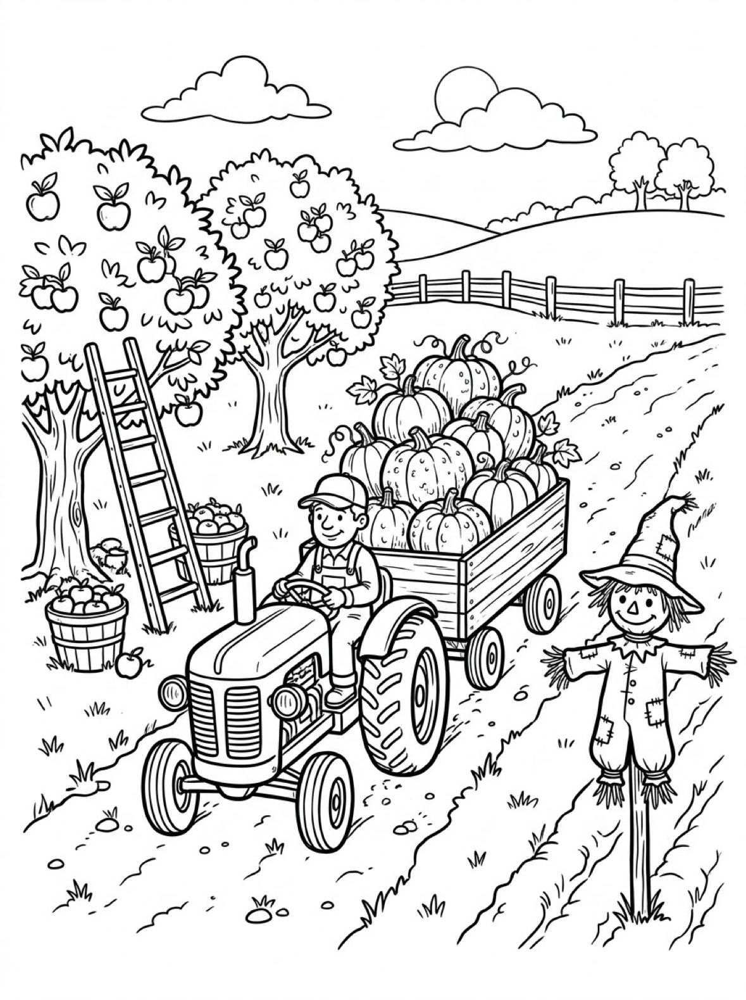
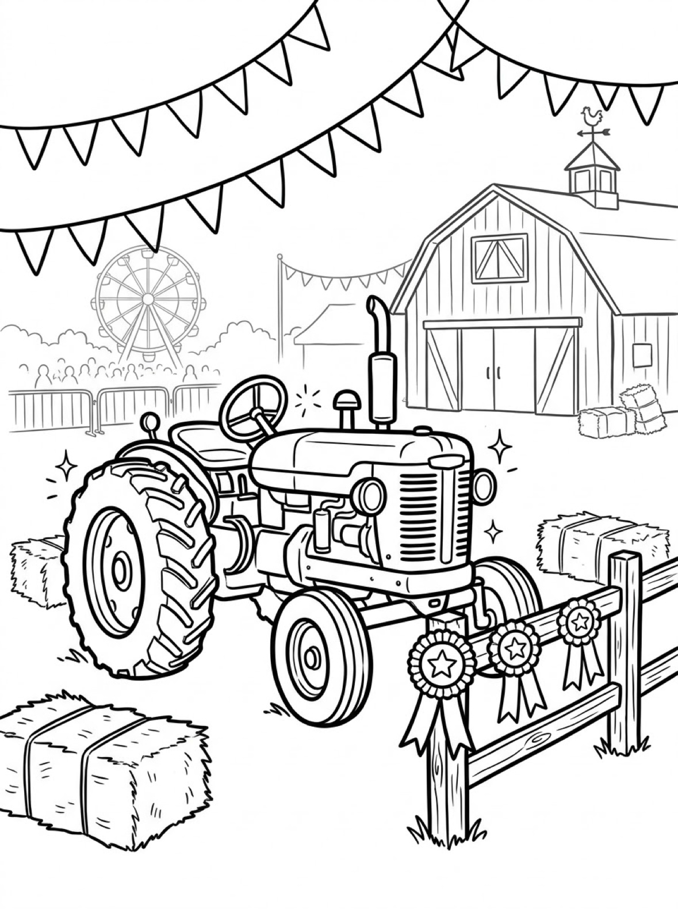

Free Tractor Coloring Pages Plowing, Pumpkin Wagon & County Fair Printables
These free tractor coloring pages give your child three hard-working farm tractors to color — one plowing a field with a dog running alongside, one hauling a wagon piled high with pumpkins, and one polished up for the county fair. Download the set below, print at home on letter-size paper, and let the coloring fun begin. No signup needed.
Last updated: October 21, 2026
Quick Answer
Yes — this page has three free printable tractor coloring pages: a farmer plowing his field with a happy dog trotting beside the tractor, a tractor pulling a pumpkin wagon through an apple orchard, and a shiny show tractor wearing its prize ribbons at the county fair. Bold outlines and big spaces, made for little hands. Download, print on letter-size paper, and hand over the crayons — no signup, no cost.
At a Glance
- Ages: 3–8
- Pages: 3 free printables
- Format: Print at home, letter size
- Cost: Free, no signup
- Supplies: Crayons or markers
- Time: 10–20 minutes
🚜 Plowing the Field Coloring Page

🎨 Download Your Free Plowing Tractor Coloring Page
A farmer driving his tractor as the plow turns the soil, a happy dog running alongside and round hay bales waiting in the field — bold outlines, big spaces, zero signup.
⬇️ Download Free Plowing Page 🖨️ Print Plowing Page🎁 Free printable for preschoolers & kids
🚜 Pumpkin Wagon in the Orchard Coloring Page

🎨 Download Your Free Pumpkin Wagon Coloring Page
A tractor hauling a wooden wagon stacked with pumpkins down a dirt track, past apple trees, baskets of fruit and a smiling scarecrow — bold outlines, big spaces, zero signup.
⬇️ Download Free Pumpkin Wagon Page 🖨️ Print Pumpkin Wagon Page🎁 Free printable for preschoolers & kids
🚜 Show Tractor at the County Fair Coloring Page

🎨 Download Your Free County Fair Tractor Coloring Page
A polished tractor on display at the fair, prize ribbons hanging on the fence in front of it and a Ferris wheel turning behind the barn — bold outlines, big spaces, zero signup.
⬇️ Download Free Fair Tractor Page 🖨️ Print Fair Tractor Page🎁 Free printable for preschoolers & kids
More Coloring Pages
Tap any picture to open its theme page and download the free printable.


🚜 How To Use This Page
- Browse the three designs and pick the tractor your child will love most.
- Tap download or print under that design — the file opens full-size, ready for letter-size paper.
- Print a couple of copies so your child can try the same tractor in different colors.
- Color together with crayons or markers and display the favorites.
🚜 Why Kids Love Tractor Coloring Pages
Tractors are the stars of the farm, and most kids can spot one from a mile away — the tall exhaust pipe, the huge back wheels, the driver sitting up high like a king. Each tractor on this page is in the middle of a real job or a real celebration: plowing a field in spring, hauling the pumpkin harvest in fall, and standing polished and proud at the county fair. That gives every page a story to color, not just a machine to fill in.
Tractors are also wonderfully forgiving subjects for new colorers. The body is a few big panels, the wheels are big satisfying circles, and the loads — hay bales, pumpkins, ribbons — are simple round shapes that look finished however a child colors them. Print the same design twice and it never comes out the same: the plowing tractor can be classic red on Monday and bright green on Friday, and both are exactly right.
🚜 Meet the Three Tractors on This Page
The plowing tractor. In the first design, a farmer drives his tractor across the field while the plow behind it digs in and turns the soil into neat rows, getting the ground ready for planting. Look at the wheels as you color: a tractor's rear wheels are much bigger than its front wheels, because the big wheels do the heavy pulling and grip the muddy ground. A happy dog runs alongside, round hay bales dot the field, and behind everything stand the barn, the tall silo where grain is stored, and the water tower.
The pumpkin wagon tractor. The second tractor is doing harvest work, pulling a wooden wagon piled so high with pumpkins it is a wonder they all stay on. The track runs past an apple orchard, where a ladder leans against a tree and baskets of picked apples wait on the grass. A smiling scarecrow stands guard by the track — his real job is scaring birds away from the crops, but today he mostly looks pleased with the harvest.
The county fair show tractor. The third tractor has the day off from field work. Washed and polished until it shines, it stands on display at the county fair with prize ribbons hanging on the fence in front of it — the judges liked this one. Hay bales and bunting decorate the fairground, the big barn stands behind, and a Ferris wheel turns in the distance for the families visiting the fair.
✏️ Tractor Coloring Tips
- Pick the tractor's color first. Real tractors are famously red, green, blue or orange — whole farms argue about which is best. Your child can join the debate, or settle it with a rainbow tractor.
- Make the loads the brightest part. Orange pumpkins, golden hay bales and red prize ribbons are the natural stars of these scenes. Coloring them boldly makes the whole page pop.
- Count as you go. How many pumpkins are in the wagon? How many hay bales are in the field? How many ribbons hang on the fair fence? These pages hide three easy counting games.
- Display the finished tractor. A favorite page on the fridge or bedroom door is the fastest way to get asked for the next one.
🚜 Coloring Pages for Different Ages
For ages 3 to 4, start with the plowing tractor. The tractor itself is one big, bold shape with huge wheels, and the dog and hay bales are simple round forms. Scribbling is fine at this age — they are learning how crayons move across the page and how hard to press, and the big shapes mean the picture still reads clearly when they finish.
For ages 5 to 6, the pumpkin wagon is the sweet spot. The tractor and wagon are still generous shapes, but the orchard adds real choices: red apples or green, orange pumpkins or white, and what color is the scarecrow's shirt? Kids this age enjoy coloring every pumpkin in the pile a slightly different shade.
For ages 7 to 8, hand over the county fair tractor. It carries the most detail — ribbons to pattern, bunting to alternate, the Ferris wheel's spokes and cars, and the barn boards behind — and it rewards careful coloring and patience. Older kids often spend the longest on this one, and it makes the best display piece of the three.
🚜 More Tractor Fun After Coloring
After coloring, ask your child to tell you the tractor's story. What will the farmer plant in the plowed field? Where is the pumpkin wagon headed — a farm stand, a pie kitchen, or a Halloween porch? Which ribbon did the fair tractor win, and for what? Write their answers on the back of the page (or let them dictate while you write) and the sheet becomes a keepsake instead of a throwaway.
If your child loves working vehicles, keep going with the truck coloring pages — a dump truck, a farm pickup and a tow truck, all with jobs of their own. And when bigger is better, the monster truck coloring pages deliver the giant wheels, mud and stadium jumps.
🔗 More Free Printables You’ll Love
- Free Truck Coloring Pages A dump truck, a pumpkin pickup and a tow truck — three hard-working trucks to color.
- Free Monster Truck Coloring Pages Giant wheels, mud runs and stadium jumps — the biggest trucks of all.
- All Free Coloring Pages Browse every free coloring page on the site, organized by theme.
❓ Tractor Coloring Pages FAQ
Are these tractor coloring pages really free?
Yes — all three designs on this page are free original printables from MomYouNeedThis. Download them, print them at home, and color — no signup and no cost.
What ages are these coloring pages best for?
Kids ages 3 to 8 get the most from this set. Younger children can start with the big, simple tractor shapes and color the main panels, while older kids enjoy the detailed farm and fair backgrounds.
How do I print a coloring page?
Tap the download button under the design you want, then print the file on regular letter-size paper. The print button opens the full-size page in a new tab if you prefer to print from there.
Is there a dog in any of these designs?
Yes — in the first design a happy dog runs alongside the tractor as it plows the field. It is a small detail, but dog lovers spot it right away.
Can I make a coloring book from these pages?
Yes — print all three designs, stack them in order, and staple along the left edge. Add a cover sheet with your child's name on it for a finished homemade tractor coloring book.